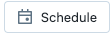
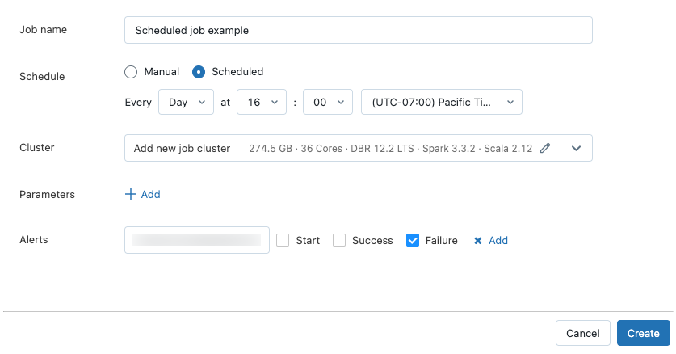
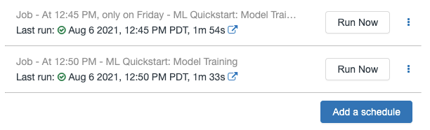

Create and manage scheduled notebook jobs
You can create and manage notebook jobs directly in the notebook UI. If a notebook is already assigned to one or more jobs, you can create and manage schedules for those jobs. If a notebook is not assigned to a job, you can create a job and a schedule to run the notebook.
Schedule a notebook job
To schedule a notebook job to run periodically:
In the notebook, click  at the top right. If no jobs exist for this notebook, the Schedule dialog appears.
If jobs already exist for the notebook, the Jobs List dialog appears. To display the Schedule dialog, click Add a schedule.
In the Schedule dialog, optionally enter a name for the job. The default name is the name of the notebook.
Select Manual to run your job only when manually triggered, or Scheduled to define a schedule for running the job. If you select Scheduled, use the drop-downs to specify the frequency, time, and time zone.
In the Cluster drop-down, select the cluster to run the task.
If you have Allow Cluster Creation permissions, by default the job runs on a new job cluster. To edit the configuration of the default job cluster, click Edit at the right of the field to display the cluster configuration dialog.
If you do not have Allow Cluster Creation permissions, by default the job runs on the cluster that the notebook is attached to. If the notebook is not attached to a cluster, you must select a cluster from the Cluster drop-down.
Optionally, enter any Parameters to pass to the job. Click Add and specify the key and value of each parameter. Parameters set the value of the notebook widget specified by the key of the parameter. Use dynamic value references to pass a limited set of dynamic values as part of a parameter value.
Optionally, specify email addresses to receive Alerts on job events. See Add email and system notifications for job events.
Click Submit.
Run a notebook job
To manually run a notebook job:
In the notebook, click at the top right.
Click Run now.
To view the job run details, click .
Manage scheduled notebook jobs
To display jobs associated with this notebook, click the Schedule button. The jobs list dialog appears, showing all jobs currently defined for this notebook. To manage jobs, click  at the right of a job in the list.
at the right of a job in the list.
From this menu, you can edit the schedule, clone the job, view job run details, pause the job, resume the job, or delete a scheduled job.
When you clone a scheduled job, a new job is created with the same parameters as the original. The new job appears in the list with the name Clone of <initial job name>.
How you edit a job depends on the complexity of the job’s schedule. Either the Schedule dialog or the Job details panel displays, allowing you to edit the schedule, cluster, parameters, and so on.